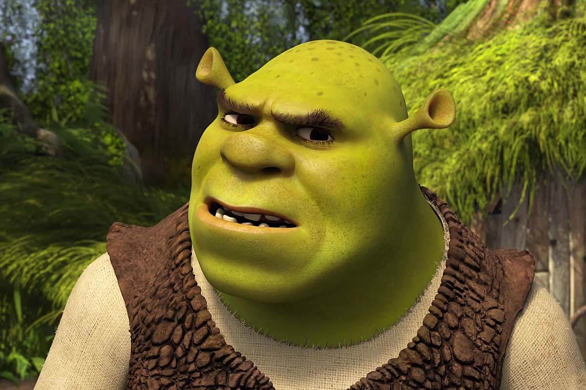

Shrek es una franquicia de medios, basada en el libro Shrek! (1990) del estadounidense William Steig, está conformada principalmente de una serie de cuatro películas de animación digital, todas producidas por DreamWorks Animation.

| Película | Año salida |
|---|---|
| Shrek | 2001 |
| Shrek 2 | 2004 |
| Shrek tercero | 2007 |
| Shrek Forever After | 2010 |
| Películas | |
|---|---|
| El gato con botas | El gato con botas: El último destino |
Personajes Principales
Personajes Secundarios
Personajes Antagonistas
Suscríbete a nuestra página para recibir noticias sobre shrek aqui